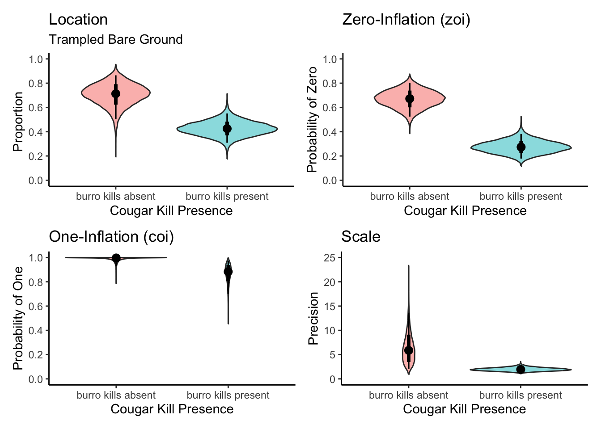

This dataset comes from Lundgren et al. (2022), which examined the activity and impact of feral donkeys (Equus africanus asinus) between wetlands with and without cougar (Puma concolor) predation.
For this example, we will focus on the effect of cougar predation on the percentage of ground trampled by feral donkeys.
6.1 Questions
Does cougar predation affect the percentage of ground trampled by feral donkeys?
Does cougar predation affect the variability in the percentage of ground trampled by feral donkeys?
6.1.1 Variables included
cover: Percentage of ground trampled by feral donkeys
Site: Name of the site where the data was collected
Access_point: Access point to the sites
if_kill: Whether a cougar kill (dead donkey) was found at the site (1 = yes, 0 = no)
6.2 Visualise the dataset
Violin plots illustrate the overall density distribution of percentage of trampled Bare Ground for both areas with (Yes) and without (No) donkey kills Each individual empty circle represents the trampled bare ground cover of a single observation. The plot visually highlights individual variability and allows for the comparison of both central tendency (indicated by the black solid line, representing the mean) and spread of trampled bare ground cover between areas where burro kills are absent versus present.
dat<-read.csv(here("data","Lundgren_Cougar_Burro_Trophic_Cascade_Trampled_BareGround.csv"))dat<-dat%>%dplyr::select(Site, Pool, if_kill, cover)%>%mutate(Site=as.factor(Site), if_kill=as.factor(if_kill), cover=as.numeric(cover))str(dat)
ggplot(dat, aes(x =if_kill, y =cover, fill =if_kill))+geom_violin(aes(fill =if_kill), # Fill violins based on 'if_kill' color ="#8B8B83", # Outline color for violins width =0.8, alpha =0.3, position =position_dodge(width =0.7))+geom_jitter(aes(color =if_kill), # Color jittered points based on 'if_kill' size =3, alpha =0.4, shape =1, # Open circles for jittered points position =position_jitterdodge(dodge.width =0.5, jitter.width =0.15))+stat_summary( fun =mean, geom ="crossbar", width =0.1, color ="black", # Black crossbar for mean linewidth =0.5, position =position_dodge(width =0.7))+labs( title ="Donkey Trampling by Cougar Kill Presence", x ="Cougar Kill Presence", y ="Proportion Trampled Bare Ground")+scale_fill_manual( values =c("burro kills absent"="cornflowerblue", "burro kills present"="firebrick"))+scale_color_manual(# Add scale_color_manual for jitter points values =c("burro kills absent"="cornflowerblue", "burro kills present"="firebrick"))+scale_x_discrete( labels =c("burro kills absent"="No", "burro kills present"="Yes"), expand =expansion(add =0.5))+theme_classic(base_size =16)+theme( axis.text =element_text(color ="#6E7B8B", size =14), axis.title =element_text(color ="#6E7B8B", size =14), legend.position ="none", axis.text.x =element_text(angle =0, hjust =0.5))
6.3 Run models and interpret results
We will fit two zero-one inflated beta regression models to the data using the brms package. We’ll use the brms package because the glmmTMB (frequentist) approach does not allow for values of ‘1’, while the brms package allows us to fit zero-one inflation models to account for these boundary values. All models incorporate Pool as a random effect to account for non-independence of observations collected at the same wetland access point
The models are as follows:
Location-Only Model: This model will estimate the average difference in the percentage of trampled bare ground between areas where “burro kills are absent” and where “burro kills are present.”
Location-Scale Model: This more comprehensive model will estimate both the average difference (location) and any differences in the variability (scale) of the percentage of trampled bare ground between areas with and without burro kills.
zoi ~ if_kill (Zero-One Inflation; zoi): This part of the model estimates how if_kill (cougar kill presence) influences the probability that an observation is exactly 0% or exactly 100% trampled bare ground. If if_kill increases the zoi probability, it means that areas with burro kills are more likely to have either no trampled ground or completely trampled ground, compared to areas without burro kills.
coi ~ if_kill (Conditional One-Inflation): This is where we distinguish between the 0% and 100% boundaries. If an observation is exactly at a boundary (0% or 100% trampled bare ground), the coi part of the model estimates how if_kill influences the probability that this boundary observation is 100% (fully trampled) rather than 0% (no trampled ground). So, if coi increases with if_kill, it suggests that if a site has exact boundary values, the presence of burro kills makes it more likely for that site to be completely trampled (100%) rather than completely untrampled (0%).
m0<-bf(cover~if_kill+(1|Pool),zoi~if_kill, coi~if_kill)prior1<-default_prior(m0, family=zero_one_inflated_beta(), data=dat)# Since this model is time-consuming, reload without running it:rerun<-Fif(rerun){fit0<-brm(m0, data =dat, family =zero_one_inflated_beta(), prior =prior1, iter =6000, warmup =1000, chains =2, cores=2, control =list( adapt_delta =0.99, max_treedepth =15), seed =123, refresh =500)saveRDS(fit0, file =here("Rdata", "fit0_BETA_Burros.rds"))}else{fit0<-readRDS(here("Rdata", "fit0_BETA_Burros.rds"))}summary(fit0)
Family: zero_one_inflated_beta
Links: mu = logit; phi = identity; zoi = logit; coi = logit
Formula: cover ~ if_kill + (1 | Pool)
zoi ~ if_kill
coi ~ if_kill
Data: dat (Number of observations: 115)
Draws: 2 chains, each with iter = 6000; warmup = 1000; thin = 1;
total post-warmup draws = 10000
Multilevel Hyperparameters:
~Pool (Number of levels: 16)
Estimate Est.Error l-95% CI u-95% CI Rhat Bulk_ESS Tail_ESS
sd(Intercept) 0.42 0.25 0.03 0.98 1.00 2136 2656
Regression Coefficients:
Estimate Est.Error l-95% CI u-95% CI Rhat Bulk_ESS
Intercept 0.70 0.41 -0.11 1.52 1.00 6799
zoi_Intercept 0.72 0.33 0.10 1.37 1.00 15641
coi_Intercept 6.31 2.97 2.51 13.90 1.00 4844
if_killburrokillspresent -1.02 0.46 -1.95 -0.11 1.00 7279
zoi_if_killburrokillspresent -1.70 0.42 -2.53 -0.89 1.00 15364
coi_if_killburrokillspresent -4.24 3.06 -11.91 -0.07 1.00 4529
Tail_ESS
Intercept 6130
zoi_Intercept 7396
coi_Intercept 3104
if_killburrokillspresent 6371
zoi_if_killburrokillspresent 7048
coi_if_killburrokillspresent 3118
Further Distributional Parameters:
Estimate Est.Error l-95% CI u-95% CI Rhat Bulk_ESS Tail_ESS
phi 2.11 0.35 1.51 2.87 1.00 6161 7129
Draws were sampled using sampling(NUTS). For each parameter, Bulk_ESS
and Tail_ESS are effective sample size measures, and Rhat is the potential
scale reduction factor on split chains (at convergence, Rhat = 1).
phi (Precision/Scale Parameter): This part of the model estimates how if_kill (cougar kill presence) influences the variability of the percentage of trampled bare ground for observations that fall between 0% and 100% (i.e., not exactly at the boundaries). A higher phi value indicates lower variability (data points are more tightly clustered around the mean). A lower phi value indicates higher variability (data points are more spread out).
m1<-bf(cover~if_kill+(1|Pool),zoi~if_kill, coi~if_kill,phi~if_kill)prior2<-default_prior(m1, family=zero_one_inflated_beta(), data=dat)rerun<-Fif(rerun){fit1<-brm(m1, data =dat, family =zero_one_inflated_beta(), prior =prior2, iter =6000, warmup =1000, chains =2, cores=2, control =list( adapt_delta =0.99, max_treedepth =15), seed =123, # refresh =500#)saveRDS(fit1, file =here("Rdata", "fit1_BETA_Burros.rds"))}else{fit1<-readRDS(here("Rdata", "fit1_BETA_Burros.rds"))}summary(fit1)
Family: zero_one_inflated_beta
Links: mu = logit; phi = log; zoi = logit; coi = logit
Formula: cover ~ if_kill + (1 | Pool)
zoi ~ if_kill
coi ~ if_kill
phi ~ if_kill
Data: dat (Number of observations: 115)
Draws: 2 chains, each with iter = 6000; warmup = 1000; thin = 1;
total post-warmup draws = 10000
Multilevel Hyperparameters:
~Pool (Number of levels: 16)
Estimate Est.Error l-95% CI u-95% CI Rhat Bulk_ESS Tail_ESS
sd(Intercept) 0.63 0.26 0.13 1.19 1.00 2237 2163
Regression Coefficients:
Estimate Est.Error l-95% CI u-95% CI Rhat Bulk_ESS
Intercept 0.92 0.46 0.01 1.85 1.00 4499
phi_Intercept 1.73 0.49 0.72 2.61 1.00 3574
zoi_Intercept 0.72 0.33 0.10 1.39 1.00 12262
coi_Intercept 6.28 2.95 2.61 14.08 1.00 4100
if_killburrokillspresent -1.22 0.52 -2.27 -0.18 1.00 4920
phi_if_killburrokillspresent -1.07 0.51 -2.01 -0.04 1.00 4334
zoi_if_killburrokillspresent -1.71 0.42 -2.55 -0.89 1.00 11924
coi_if_killburrokillspresent -4.20 3.05 -12.07 -0.08 1.00 3953
Tail_ESS
Intercept 5041
phi_Intercept 5090
zoi_Intercept 7049
coi_Intercept 2701
if_killburrokillspresent 5730
phi_if_killburrokillspresent 5570
zoi_if_killburrokillspresent 6844
coi_if_killburrokillspresent 2698
Draws were sampled using sampling(NUTS). For each parameter, Bulk_ESS
and Tail_ESS are effective sample size measures, and Rhat is the potential
scale reduction factor on split chains (at convergence, Rhat = 1).
Interpreting Model Outputs
Model outputs for components like mean (mu), zero-inflation (zoi), and one-inflation (coi) are often on the logit scale, while outputs for precision (phi) are on the log scale. These scales are not directly interpretable, so we must convert them back.
The interpretation method changes depending on whether you’re looking at an intercept (a baseline value) or the effect of a predictor (a coefficient).
burro_draws<-fit1%>%epred_draws(newdata =expand.grid(if_kill=unique(dat$if_kill)),re_formula =NA, dpar=TRUE)# Plot for locationplot_mu<-ggplot(burro_draws, aes(x =factor(if_kill), y =mu, fill =factor(if_kill)))+geom_violin(alpha =0.5, show.legend =FALSE)+stat_pointinterval(show.legend =FALSE)+labs( title ="Location", subtitle ="Trampled Bare Ground", x ="Cougar Kill Presence", y ="Proportion ")+theme_classic()+scale_y_continuous(breaks =seq(0,1,0.2),limits =c(0, 1))# Plot for Zero-Inflation (zoi)plot_zoi<-ggplot(burro_draws, aes(x =factor(if_kill), y =zoi, fill =factor(if_kill)))+geom_violin(alpha =0.5, show.legend =FALSE)+stat_pointinterval(show.legend =FALSE)+labs( title ="Zero-Inflation (zoi)", x ="Cougar Kill Presence", y ="Probability of Zero")+theme_classic()+scale_y_continuous(breaks =seq(0,1,0.2),limits =c(0, 1))# Plot for One-Inflation (coi)plot_coi<-ggplot(burro_draws, aes(x =factor(if_kill), y =coi, fill =factor(if_kill)))+geom_violin(alpha =0.5, show.legend =FALSE)+stat_pointinterval(show.legend =FALSE)+labs( title ="One-Inflation (coi)", x ="Cougar Kill Presence", y ="Probability of One")+theme_classic()+scale_y_continuous(breaks =seq(0,1,0.2),limits =c(0, 1))# Plot for Precision (phi)plot_phi<-ggplot(burro_draws, aes(x =factor(if_kill), y =phi, fill =factor(if_kill)))+geom_violin(alpha =0.5, show.legend =FALSE)+stat_pointinterval(show.legend =FALSE)+labs( title ="Scale", x ="Cougar Kill Presence", y ="Precision")+theme_classic()+scale_y_continuous(breaks =seq(0,25,5),limits =c(0, 25))# --- 4. Combine Plots into a Single Figure ---# Arrange the four plots in a 2x2 gridcombined_plot<-(plot_mu+plot_zoi)/(plot_coi+plot_phi)&theme( panel.grid.major =element_blank(), panel.grid.minor =element_blank())# Display the final combined plotcombined_plot

6.3.2 Model Comparison Results
Our analysis of the model comparison results shows that the location-scale model is the most supported by the data. This is indicated by its lowest LOO (Leave-One-Out Cross-Validation) information criterion value.
6.3.3 Model Interpretation
Location (mean) part:
On average, the log-odds of the mean percentage of trampled bare ground are lower when burro kills are present compared to when they are absent (\(\beta_{[\text{No-Yes}]}^{(l)}\) = -1.22, 95% CI [-2.27, -0.18]). This corresponds to a 70.5% decrease in the odds of having a higher percentage of trampled ground, suggesting the presence of burro kills is associated with a lower average of trampled bare ground.
Scale (dispersion/phi) part: The log-precision (phi) is lower when burro kills are present, compared to when they are absent (\(\beta_{[\text{No-Yes}]}^{(s)}\) = -1.07, 95% CI [-2.01, -0.04]). This means the precision is multiplied by a factor of 0.34 (a 65.7% decrease), suggesting that the percentage of trampled bare ground exhibits more variation in areas where burro kills are present.
Zero-One Inflation (zoi) part: The log-odds of observing exactly 0% or 100% trampled bare ground are lower when burro kills are present (\(\beta_{[\text{No-Yes}]}^{(l)}\) = -1.71, 95% CI [-2.55, -0.89]). This represents an 81.9% decrease in the odds of observing completely untrampled ground, meaning areas with burro kills are less likely to be at this specific boundary.
One-inflation (coi) part: The log-odds of a boundary observation being 100% rather than 0% are lower when burro kills are present (\(\beta_{[\text{No-Yes}]}^{(l)}\) = -4.20, 95% CI [-12.07, -0.08]). This equates to a 98.5% decrease in the odds, implying that it’s extremely unlikely to find completely trampled ground (100%) where burro kills are present compared to where they are absent.
6.4 Conclusion
Does cougar predation affect the percentage of ground trampled by feral donkeys?
Answer: Yes, cougar predation, affects the average percentage of ground trampled by feral donkeys.
Does cougar predation affect the variability in the percentage of ground trampled by feral donkeys?
Answer: The model provides evidence that cougar predation affects the variability in the percentage of ground trampled by feral donkeys.
Source Code
---title: "Beyond Gaussian 2"---```{r}#| label: load_packages#| echo: false# Load required packagespacman::p_load(## data manipulation dplyr, tibble, tidyverse, broom, broom.mixed,## model fitting ape, arm, brms, broom.mixed, cmdstanr, emmeans, glmmTMB, MASS, phytools, rstan, TreeTools,## model checking and evaluation DHARMa, loo, MuMIn, parallel,## visualisation bayesplot, ggplot2, patchwork, tidybayes,## reporting and utilities gt, here, kableExtra, knitr)```This dataset comes from [Lundgren et al. (2022)](https://doi.org/10.1111/1365-2656.13766), which examined the activity and impact of feral donkeys (*Equus africanus asinus*) between wetlands with and without cougar (*Puma concolor*) predation.For this example, we will focus on the effect of cougar predation on the percentage of ground trampled by feral donkeys.## Questions1. **Does cougar predation affect the percentage of ground trampled by feral donkeys?**2. **Does cougar predation affect the variability in the percentage of ground trampled by feral donkeys?**### Variables included::: {.callout-note appearance="simple" icon="false"}- `cover`: Percentage of ground trampled by feral donkeys- `Site`: Name of the site where the data was collected- `Access_point`: Access point to the sites- `if_kill`: Whether a cougar kill (dead donkey) was found at the site (1 = yes, 0 = no):::## Visualise the datasetViolin plots illustrate the overall density distribution of percentage of trampled Bare Ground for both areas with (Yes) and without (No) donkey kills Each individual empty circle represents the trampled bare ground cover of a single observation. The plot visually highlights individual variability and allows for the comparison of both central tendency (indicated by the black solid line, representing the mean) and spread of trampled bare ground cover between areas where burro kills are absent versus present.```{r}#| label: show_data - beyond_gaussian2#| fig-width: 8#| fig-height: 6dat <-read.csv(here("data","Lundgren_Cougar_Burro_Trophic_Cascade_Trampled_BareGround.csv"))dat <- dat %>% dplyr::select(Site, Pool, if_kill, cover) %>%mutate(Site=as.factor(Site),if_kill=as.factor(if_kill),cover=as.numeric(cover) )str(dat)ggplot(dat, aes(x = if_kill, y = cover, fill = if_kill)) +geom_violin(aes(fill = if_kill), # Fill violins based on 'if_kill'color ="#8B8B83", # Outline color for violinswidth =0.8,alpha =0.3,position =position_dodge(width =0.7) ) +geom_jitter(aes(color = if_kill), # Color jittered points based on 'if_kill'size =3,alpha =0.4,shape =1, # Open circles for jittered pointsposition =position_jitterdodge(dodge.width =0.5, jitter.width =0.15) ) +stat_summary(fun = mean,geom ="crossbar",width =0.1,color ="black", # Black crossbar for meanlinewidth =0.5,position =position_dodge(width =0.7) ) +labs(title ="Donkey Trampling by Cougar Kill Presence",x ="Cougar Kill Presence",y ="Proportion Trampled Bare Ground" ) +scale_fill_manual(values =c("burro kills absent"="cornflowerblue", "burro kills present"="firebrick") ) +scale_color_manual( # Add scale_color_manual for jitter pointsvalues =c("burro kills absent"="cornflowerblue", "burro kills present"="firebrick") ) +scale_x_discrete(labels =c("burro kills absent"="No", "burro kills present"="Yes"),expand =expansion(add =0.5) ) +theme_classic(base_size =16) +theme(axis.text =element_text(color ="#6E7B8B", size =14),axis.title =element_text(color ="#6E7B8B", size =14),legend.position ="none",axis.text.x =element_text(angle =0, hjust =0.5) )```## Run models and interpret resultsWe will fit two zero-one inflated beta regression models to the data using the `brms` package. We'll use the `brms` package because the `glmmTMB` (frequentist) approach does not allow for values of '1', while the `brms` package allows us to fit zero-one inflation models to account for these boundary values. All models incorporate `Pool` as a random effect to account for non-independence of observations collected at the same wetland access pointThe models are as follows:a. Location-Only Model: This model will estimate the average difference in the percentage of trampled bare ground between areas where "burro kills are absent" and where "burro kills are present."b. Location-Scale Model: This more comprehensive model will estimate both the average difference (location) and any differences in the variability (scale) of the percentage of trampled bare ground between areas with and without burro kills.### Model fitting:::::: panel-tabset## Location-only model::: {.callout-tip appearance="simple" icon="false"}`zoi ~ if_kill` (Zero-One Inflation; zoi): This part of the model estimates how if_kill (cougar kill presence) influences the probability that an observation is exactly 0% or exactly 100% trampled bare ground. If `if_kill` increases the `zoi` probability, it means that areas with burro kills are more likely to have either no trampled ground or completely trampled ground, compared to areas without burro kills.`coi ~ if_kill` (Conditional One-Inflation): This is where we distinguish between the 0% and 100% boundaries. If an observation is exactly at a boundary (0% or 100% trampled bare ground), the `coi` part of the model estimates how `if_kill` influences the probability that this boundary observation is 100% (fully trampled) rather than 0% (no trampled ground). So, if `coi` increases with `if_kill`, it suggests that if a site has exact boundary values, the presence of burro kills makes it more likely for that site to be completely trampled (100%) rather than completely untrampled (0%).:::```{r}#| label: model_fitting1 - beyond_gaussian2#| eval: falsem0<-bf(cover ~ if_kill + (1|Pool), zoi~ if_kill, coi~ if_kill) prior1<-default_prior(m0, family=zero_one_inflated_beta(), data=dat)# Since this model is time-consuming, reload without running it:rerun <- Fif(rerun){ fit0 <-brm( m0,data = dat,family =zero_one_inflated_beta(),prior = prior1,iter =6000,warmup =1000,chains =2, cores=2,control =list(adapt_delta =0.99,max_treedepth =15 ),seed =123,refresh =500 )saveRDS(fit0, file =here("Rdata", "fit0_BETA_Burros.rds"))}else{ fit0 <-readRDS(here("Rdata", "fit0_BETA_Burros.rds"))}summary(fit0)``````{r}#| label: model_fitting1_results - beyond_gaussian2#| echo: falsefit0 <-readRDS(here("Rdata", "fit0_BETA_Burros.rds"))summary(fit0)```## Location-scale model::: {.callout-tip appearance="simple" icon="false"}`phi` (Precision/Scale Parameter): This part of the model estimates how `if_kill` (cougar kill presence) influences the variability of the percentage of trampled bare ground for observations that fall between 0% and 100% (i.e., not exactly at the boundaries). A higher `phi` value indicates lower variability (data points are more tightly clustered around the mean). A lower `phi` value indicates higher variability (data points are more spread out).:::```{r}#| label: model_fitting2 - beyond_gaussian2#| eval: falsem1<-bf(cover ~ if_kill + (1|Pool), zoi ~ if_kill, coi ~ if_kill, phi ~ if_kill) prior2<-default_prior(m1, family=zero_one_inflated_beta(), data=dat)rerun <- Fif(rerun){ fit1 <-brm( m1,data = dat,family =zero_one_inflated_beta(),prior = prior2,iter =6000,warmup =1000,chains =2, cores=2,control =list(adapt_delta =0.99,max_treedepth =15 ),seed =123, #refresh =500# )saveRDS(fit1, file =here("Rdata", "fit1_BETA_Burros.rds"))}else{ fit1 <-readRDS(here("Rdata", "fit1_BETA_Burros.rds"))}summary(fit1)``````{r}#| label: model_fitting2_results - beyond_gaussian2#| echo: falsefit1 <-readRDS(here("Rdata", "fit1_BETA_Burros.rds"))summary(fit1)```::: callout-note### Interpreting Model OutputsModel outputs for components like mean (`mu`), zero-inflation (`zoi`), and one-inflation (`coi`) are often on the **logit scale**, while outputs for precision (`phi`) are on the **log scale**. These scales are not directly interpretable, so we must convert them back.The interpretation method changes depending on whether you're looking at an **intercept** (a baseline value) or the **effect of a predictor** (a coefficient).::: panel-tabset## Part 1: Interpreting Intercepts (Baseline Values)An intercept gives you the starting point for your reference group.* **For Probabilities (Logit Scale):** To find the baseline probability, apply the **inverse-logit** function to the intercept. * **Formula:** $$ \text{Probability} = \frac{1}{1 + e^{-\text{Estimate}}} $$ * **Example (`zoi_Intercept` = 0.72):** The probability of an exact zero in the baseline group is $1 / (1 + e^{-0.72}) \approx 0.673$, or **67.3%**.* **For Other Values (Log Scale):** To find the baseline value (e.g., precision), **exponentiate** the intercept. * **Formula:** $$ \text{Value} = e^{\text{Estimate}} $$ * **Example (`phi_Intercept` = 1.73):** The baseline precision is $e^{1.73} \approx 5.64$.## Part 2: Interpreting Predictor Coefficients (Effects)A coefficient shows how a predictor changes the outcome relative to the reference group. The key is to **exponentiate the coefficient** first.* **For Odds (Logit Scale):** The exponentiated coefficient is an **Odds Ratio (OR)**. * **Formula:** $$ \text{Odds Ratio (OR)} = e^{\text{Coefficient}} $$ $$ \text{Percentage Change in Odds} = (\text{OR} - 1) \times 100\% $$ * **Example (`if_kill` on `mu` = -1.22):** The OR is $e^{-1.22} \approx 0.295$. The percentage change is $(0.295 - 1) \times 100\% = -70.5\%$. * **Interpretation:** The odds of having higher cover **decrease by 70.5%** when burro kills are present.* **For Other Values (Log Scale):** The exponentiated coefficient is a **multiplicative factor**. * **Formula:** $$ \text{Multiplicative Factor} = e^{\text{Coefficient}} $$ $$ \text{Percentage Change} = (\text{Factor} - 1) \times 100\% $$ * **Example (`if_kill` on `phi` = -1.07):** The factor is $e^{-1.07} \approx 0.343$. The percentage change is $(0.343 - 1) \times 100\% = -65.7\%$. * **Interpretation:** The presence of burro kills **decreases precision by 65.7%**.::::::## Model Comparison```{r}#| label: model_comparison - beyond_gaussian2#| eval: falsef0loo <- loo::loo(fit0)f1loo <- loo::loo(fit1)fc<-loo::loo_compare(f0loo, f1loo)fc# elpd_diff se_diff# fit1 0.0 0.0 # fit0 -2.7 1.6 ```## Plot results ```{r}burro_draws<-fit1 %>%epred_draws(newdata =expand.grid(if_kill=unique(dat$if_kill) ),re_formula =NA, dpar=TRUE) # Plot for locationplot_mu <-ggplot(burro_draws, aes(x =factor(if_kill), y = mu, fill =factor(if_kill))) +geom_violin(alpha =0.5, show.legend =FALSE) +stat_pointinterval(show.legend =FALSE) +labs(title ="Location",subtitle ="Trampled Bare Ground",x ="Cougar Kill Presence",y ="Proportion " ) +theme_classic()+scale_y_continuous(breaks =seq(0,1,0.2),limits =c(0, 1))# Plot for Zero-Inflation (zoi)plot_zoi <-ggplot(burro_draws, aes(x =factor(if_kill), y = zoi, fill =factor(if_kill))) +geom_violin(alpha =0.5, show.legend =FALSE) +stat_pointinterval(show.legend =FALSE) +labs(title ="Zero-Inflation (zoi)",x ="Cougar Kill Presence",y ="Probability of Zero" ) +theme_classic()+scale_y_continuous(breaks =seq(0,1,0.2),limits =c(0, 1))# Plot for One-Inflation (coi)plot_coi <-ggplot(burro_draws, aes(x =factor(if_kill), y = coi, fill =factor(if_kill))) +geom_violin(alpha =0.5, show.legend =FALSE) +stat_pointinterval(show.legend =FALSE) +labs(title ="One-Inflation (coi)",x ="Cougar Kill Presence",y ="Probability of One" ) +theme_classic() +scale_y_continuous(breaks =seq(0,1,0.2),limits =c(0, 1))# Plot for Precision (phi)plot_phi <-ggplot(burro_draws, aes(x =factor(if_kill), y = phi, fill =factor(if_kill))) +geom_violin(alpha =0.5, show.legend =FALSE) +stat_pointinterval(show.legend =FALSE) +labs(title ="Scale",x ="Cougar Kill Presence",y ="Precision" ) +theme_classic()+scale_y_continuous(breaks =seq(0,25,5),limits =c(0, 25))# --- 4. Combine Plots into a Single Figure ---# Arrange the four plots in a 2x2 gridcombined_plot <- (plot_mu + plot_zoi) / (plot_coi + plot_phi) &theme(panel.grid.major =element_blank(),panel.grid.minor =element_blank() )# Display the final combined plotcombined_plot```::::::### Model Comparison ResultsOur analysis of the model comparison results shows that the location-scale model is the most supported by the data. This is indicated by its lowest LOO (Leave-One-Out Cross-Validation) information criterion value.### Model Interpretation**Location (mean) part:**On average, the log-odds of the mean percentage of trampled bare ground are lower when burro kills are present compared to when they are absent ($\beta_{[\text{No-Yes}]}^{(l)}$ = -1.22, 95% CI \[-2.27, -0.18\]). This corresponds to a 70.5% decrease in the odds of having a higher percentage of trampled ground, suggesting the presence of burro kills is associated with a lower average of trampled bare ground.**Scale (dispersion/phi) part:** The log-precision (phi) is lower when burro kills are present, compared to when they are absent ($\beta_{[\text{No-Yes}]}^{(s)}$ = -1.07, 95% CI \[-2.01, -0.04\]). This means the precision is multiplied by a factor of 0.34 (a 65.7% decrease), suggesting that the percentage of trampled bare ground exhibits more variation in areas where burro kills are present.**Zero-One Inflation (zoi) part:** The log-odds of observing exactly 0% or 100% trampled bare ground are lower when burro kills are present ($\beta_{[\text{No-Yes}]}^{(l)}$ = -1.71, 95% CI \[-2.55, -0.89\]). This represents an 81.9% decrease in the odds of observing completely untrampled ground, meaning areas with burro kills are less likely to be at this specific boundary.**One-inflation (coi) part:** The log-odds of a boundary observation being 100% rather than 0% are lower when burro kills are present ($\beta_{[\text{No-Yes}]}^{(l)}$ = -4.20, 95% CI \[-12.07, -0.08\]). This equates to a 98.5% decrease in the odds, implying that it's extremely unlikely to find completely trampled ground (100%) where burro kills are present compared to where they are absent.## Conclusion**Does cougar predation affect the percentage of ground trampled by feral donkeys?**Answer: Yes, cougar predation, affects the average percentage of ground trampled by feral donkeys.**Does cougar predation affect the variability in the percentage of ground trampled by feral donkeys?**Answer: The model provides evidence that cougar predation affects the variability in the percentage of ground trampled by feral donkeys.